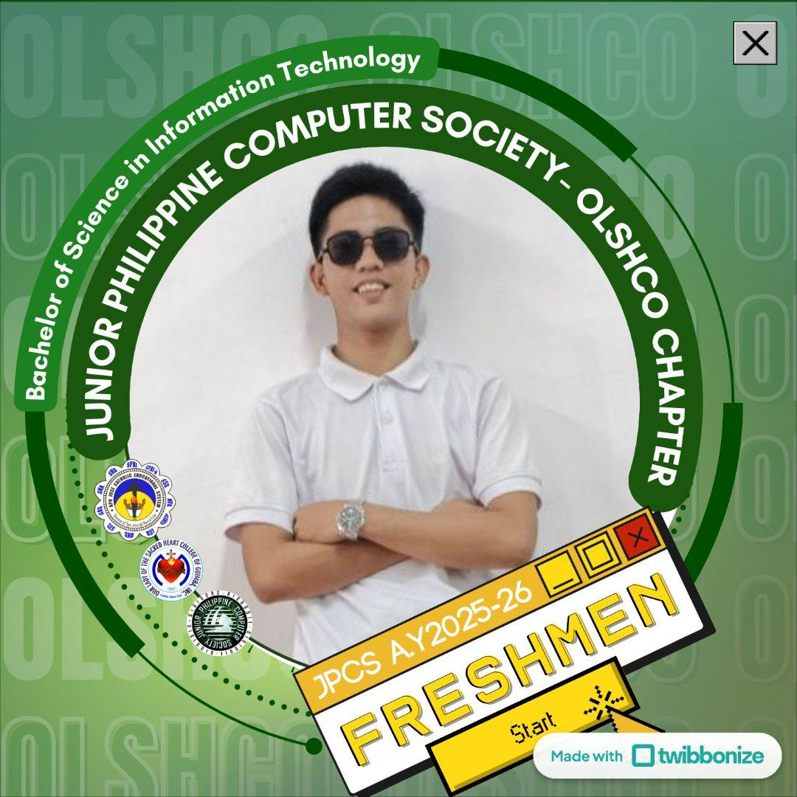

HOME
Hi! I’m John Kevin Delfin, currently studying at Olscho Inc. College of Guimba and pursuing a career in web development and cybersecurity.
I aim to apply and enhance my skills, gain more knowledge and experience, and improve myself professionally. I also want to contribute to your company’s growth through my skills, dedication, and creativity.

web developer
cyber security